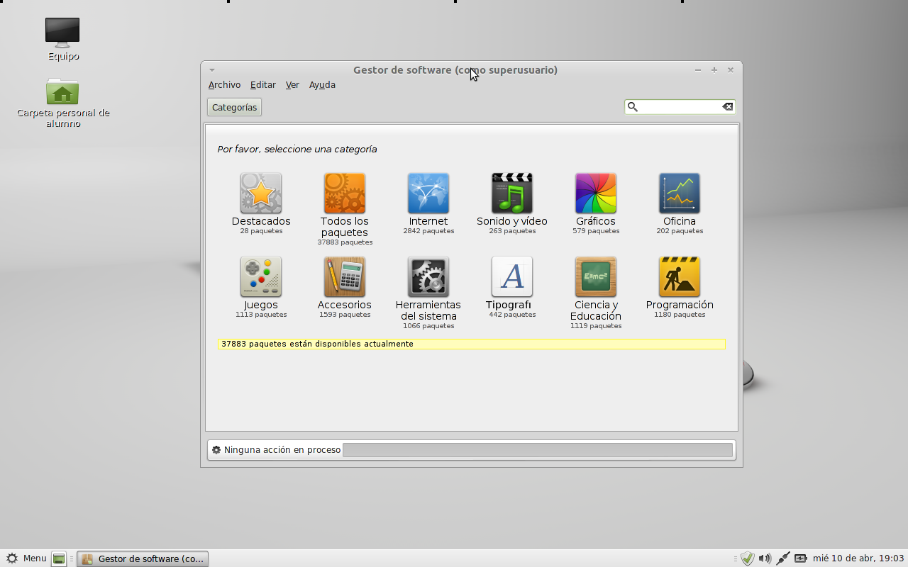
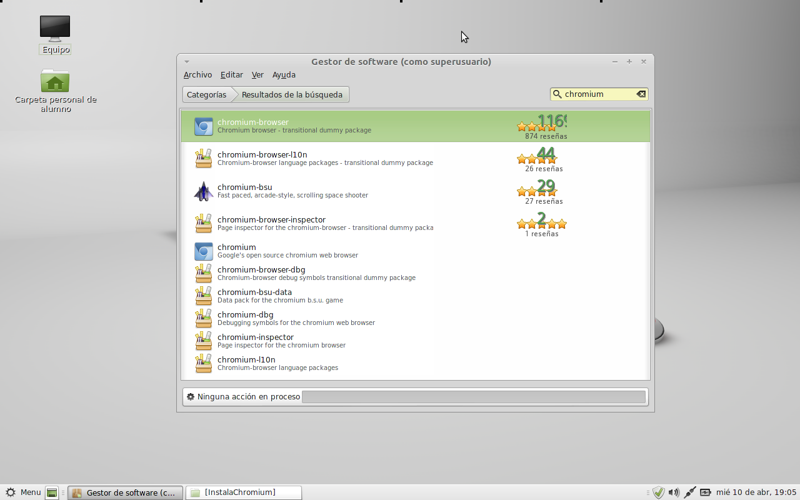
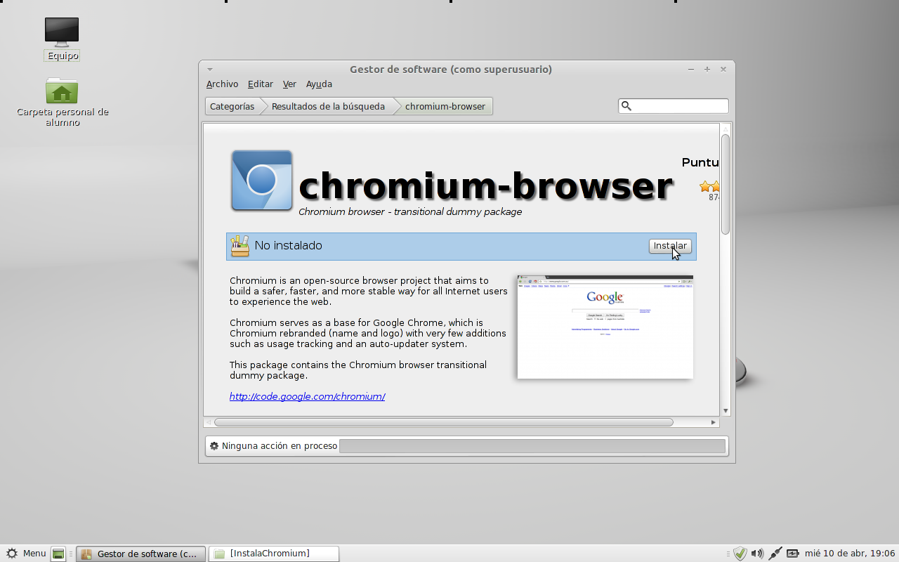
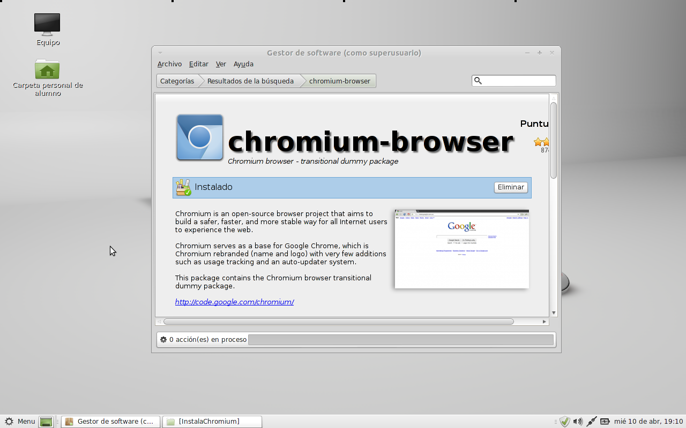

Instalar Chromium browser
Si querés tener en tu linux la versión libre de Chrome, tenés que instalarte Chromium. De hecho, Chrome está basado en Chromium sólo que le agrega los componentes no libres de Google.
Instalemos Chromium en 4 pasos
- Afortunadamente el Chromium se encuentra en los repositorios de nuestro sistema LMDE. Para poder instalarlo debemos ir al Menu --> Gestor de Software. 
- En el cuadro de búsqueda escribimos "chromium". 
- Hacemos doble click sobre el primer resultado que nos aparece (el mismo que vemos en la imagen anterior). 
- Y apretamos sobre el botón de "instalar". Una vez finalizado el proceso, dentro de Menu --> Internet --> Chromium podremos encontrar el acceso a este navegador. 
Comentarios
Comments powered by Disqus